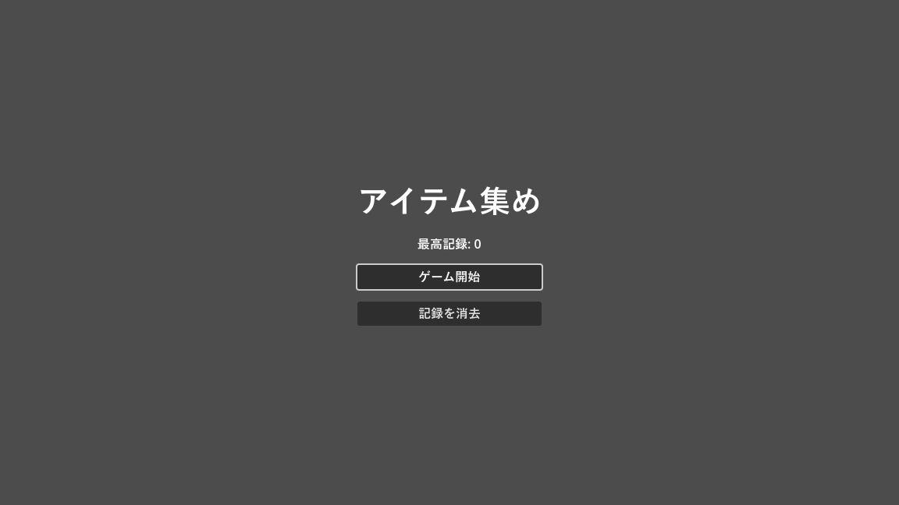

第 15 章 シーン管理とデータ
ゲームは、タイトル画面、ステージ、リザルト画面など、複数の画面で構成される。本章では、シーンを切り替える方法、シーンをまたいでデータを保持する方法、データを定義するリソースの作り方、セーブデータを保存する方法を説明する。サンプルは chapter15 フォルダーにある。
シーンを切り替える
実行中のシーンを別のシーンに切り替えるには、SceneTree の次のメソッドを使う。
メソッド |
内容 |
|---|---|
|
シーンファイルのパスを指定して切り替える。 |
|
|
|
現在のシーンを最初からやり直す。リトライに使う。 |
シーンを切り替えると、それまでのシーンのノードはすべて削除される。そのため、スコアのようにシーンをまたいで残したい値は、シーンの外に置く必要がある。
オートロード
オートロード（autoload）は、ゲームの起動時に自動で作られ、シーンを切り替えても削除されないノードである。第 5 章 ノードとシーン で見たように、シーンツリーの root の直下に、現在のシーンと並んで置かれる。登録した名前で、どのスクリプトからもアクセスできる。他の言語でいうシングルトンやグローバル変数に近い。
オートロードは、次の手順で登録する。
登録したいスクリプト（またはシーン）を作る。サンプルでは
chapter15/game_state.gdである。「プロジェクト」→「プロジェクト設定」の「グローバル」タブを開き、「自動読み込み」を選ぶ。
「パス」にスクリプトを指定し、「ノード名」に
GameStateと入力して「追加」を押す。「グローバル変数」が有効になっていることを確認する。
これで、どのスクリプトからも GameState.score のように使えるようになる。
1extends Node
2## シーンをまたいで保持するゲームの状態。プロジェクト設定でオートロードに登録して使う。
3## どのスクリプトからも GameState という名前でアクセスできる。
4
5signal score_changed(score: int)
6
7const SAVE_PATH := "user://chapter15_save.cfg"
8
9var score: int = 0:
10 set(value):
11 score = value
12 score_changed.emit(score)
13var high_score: int = 0
14
15
16func _ready() -> void:
17 load_game()
18
19
20## 今回のスコアが最高記録を超えていたら更新して保存する。更新したら true を返す。
21func commit_score() -> bool:
22 if score <= high_score:
23 return false
24 high_score = score
25 save_game()
26 return true
27
28
29func save_game() -> void:
30 var config := ConfigFile.new()
31 config.set_value("record", "high_score", high_score)
32 var error := config.save(SAVE_PATH)
33 if error != OK:
34 push_error("セーブに失敗した: %s" % error_string(error))
35
36
37func load_game() -> void:
38 var config := ConfigFile.new()
39 # 初回起動時はファイルがないので、読み込みに失敗しても既定値のまま進める。
40 if config.load(SAVE_PATH) != OK:
41 return
42 high_score = config.get_value("record", "high_score", 0)
43
44
45func reset_record() -> void:
46 high_score = 0
47 save_game()
score にはセッター（第 7 章 GDScript の応用）を定義しており、値が変わるたびに score_changed シグナルを発行する。画面にスコアを表示するノードは、このシグナルに接続しておけば、スコアが変わったときだけ表示を更新できる。
オートロードは便利だが、何でも入れるとどこからでも変更できる値が増え、不具合の原因を追いにくくなる。シーンをまたいで本当に必要な値（スコア、設定、進行状況など）や、共通の機能（効果音の再生、画面の切り替えの演出など）に絞って使うとよい。
独自のリソースでデータを定義する
アイテムの名前と得点、敵の体力と攻撃力のようなデータは、スクリプトに直接書くより、データとして分けて管理すると調整しやすい。Godot では、Resource を継承したクラスを作り、そのインスタンスを .tres ファイルとして保存する方法がよく使われる。
1class_name ItemData
2extends Resource
3## アイテムの定義データ。インスペクターで値を入力して .tres ファイルとして保存する。
4
5@export var display_name: String = ""
6@export var points: int = 0
7@export var color: Color = Color.WHITE
8@export_multiline var description: String = ""
このクラスのリソースは、次の手順で作る。
ファイルシステムドックで保存先のフォルダーを右クリックし、「新規リソース...」を選ぶ。
一覧から
ItemDataを選んで作成し、apple.tresなどの名前で保存する。保存したファイルを選ぶと、インスペクターに
@exportを付けた変数が表示されるので、値を入力する。
作られた .tres ファイルはテキスト形式である。
1[gd_resource type="Resource" script_class="ItemData" format=3]
2
3[ext_resource type="Script" path="res://chapter15/item_data.gd" id="1_item"]
4
5[resource]
6script = ExtResource("1_item")
7display_name = "りんご"
8points = 10
9color = Color(0.9, 0.2, 0.2, 1)
10description = "よく見かける果物。"
リソースは、@export var items: Array[ItemData] のような変数に設定して使う。ゲームの調整をする人は、スクリプトを開かずにインスペクターだけで値を変えられる。
注釈
同じリソースファイルを複数の場所で読み込むと、同じインスタンスが共有される。実行中にリソースの値を書き換えると、そのリソースを使うすべての場所に影響する。インスタンスごとに値を変えたい場合は、duplicate() で複製してから変更する。
データを保存する
セーブデータや設定のように、ゲームを終了しても残したいデータはファイルに保存する。保存先には user:// を使う（第 4 章 エディターの画面構成）。res:// はエクスポートしたゲームでは書き込めない。
user:// の実際の場所は、エディターの「プロジェクト」→「ユーザーデータフォルダーを開く」で確認できる。Windows では %APPDATA%\Godot\app_userdata\プロジェクト名 である。
保存の方法には、主に次の 3 つがある。
方法 |
特徴 |
向いている用途 |
|---|---|---|
|
INI ファイルに似た「セクション」「キー」「値」の形式で保存する。 |
設定、簡単なセーブデータ |
JSON |
|
ほかのツールと連携するデータ、Web との通信 |
|
リソースをそのまま |
複雑なデータ構造。ただし後述の注意がある。 |
ConfigFile
game_state.gd の save_game() と load_game() では、最高記録を ConfigFile で保存・読み込みしている。保存されるファイルの中身は次のようになる。
1[record]
2
3high_score=10
get_value() の第 3 引数は、値がない場合の既定値である。初回起動時のようにファイルがない場合も、load() の戻り値を確認すれば安全に処理できる。
JSON
JSON で保存する場合は、FileAccess でファイルを開いて文字列を書き込む。ステージのスクリプトでは、最後のプレイの結果を JSON で保存している。
1extends Control
2## 制限時間内にアイテムのボタンを押して得点を集めるステージ。
3## 終了するとスコアを JSON ファイルに書き出し、タイトル画面へ戻る。
4
5const TITLE_SCENE := "res://chapter15/title.tscn"
6const RESULT_PATH := "user://chapter15_last_result.json"
7
8## 登場するアイテム。.tres ファイルに保存した ItemData を読み込む。
9@export var items: Array[ItemData] = []
10
11var _picked: Dictionary[String, int] = {}
12
13@onready var _timer: Timer = $GameTimer
14
15
16func _ready() -> void:
17 for item in items:
18 var button := Button.new()
19 button.text = "%s（%d 点）" % [item.display_name, item.points]
20 button.tooltip_text = item.description
21 button.modulate = item.color
22 button.pressed.connect(_on_item_pressed.bind(item))
23 %ItemList.add_child(button)
24 GameState.score_changed.connect(_on_score_changed)
25 _on_score_changed(GameState.score)
26 _timer.timeout.connect(_on_game_timer_timeout)
27 _timer.start()
28
29
30func _process(_delta: float) -> void:
31 %TimeLabel.text = "残り時間: %.1f 秒" % _timer.time_left
32
33
34func _on_item_pressed(item: ItemData) -> void:
35 GameState.score += item.points
36 _picked[item.display_name] = _picked.get(item.display_name, 0) + 1
37
38
39func _on_score_changed(score: int) -> void:
40 %ScoreLabel.text = "スコア: %d" % score
41
42
43func _on_game_timer_timeout() -> void:
44 var is_new_record := GameState.commit_score()
45 _save_result(is_new_record)
46 get_tree().change_scene_to_file(TITLE_SCENE)
47
48
49## 今回の結果を JSON 形式で保存する。
50func _save_result(is_new_record: bool) -> void:
51 var result := {
52 "score": GameState.score,
53 "new_record": is_new_record,
54 "picked": _picked,
55 "time": Time.get_datetime_string_from_system(),
56 }
57 var file := FileAccess.open(RESULT_PATH, FileAccess.WRITE)
58 if file == null:
59 push_error("結果を保存できない: %s" % error_string(FileAccess.get_open_error()))
60 return
61 file.store_string(JSON.stringify(result, " "))
62 print("結果を保存した: ", ProjectSettings.globalize_path(RESULT_PATH))
FileAccess.open() は、開けなかった場合に null を返す。FileAccess のインスタンスは、使い終わって参照がなくなると自動で閉じられる。明示的に閉じる場合は close() を呼ぶ。
JSON を読み込むときは JSON.parse_string() を使う。JSON の数値は、整数であっても float として読み込まれる点に注意する。{"score": 10} を読み込むと 10.0 になるので、整数として使う場合は int() で変換する。
警告
.tres などのリソースファイルには、スクリプトを埋め込むことができる。インターネットから入手したセーブデータなど、信頼できないリソースファイルを load() で読み込むと、意図しないコードが実行される危険がある。プレイヤー間で共有される可能性があるデータは、ConfigFile や JSON で保存するほうが安全である。
サンプル
サンプルの title.tscn と stage.tscn は、ここまでの内容を組み合わせた小さなゲームである。タイトル画面で「ゲーム開始」を押すとステージに切り替わり、10 秒間アイテムのボタンを押して得点を集める。時間切れになると、最高記録を ConfigFile で、今回の結果を JSON で保存して、タイトル画面に戻る。
図 30 サンプルのシーンとデータの流れ
stage.gd の items 変数には、インスペクターで apple.tres と gem.tres を設定している。_ready() では、アイテムごとにボタンを作り、名前、得点、色をリソースから設定している。新しいアイテムを追加したいときは、.tres ファイルを作って items に加えるだけでよく、スクリプトを変更する必要はない。


図 31 title.tscn の実行結果